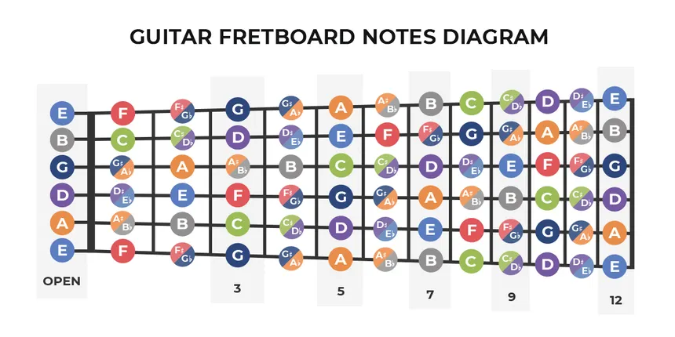

Harjoituksia - Ensiaskeleet kohti kappaleiden soittamista

Harjoittelu on tie musiikilliseen kasvuun. Nämä harjoitukset auttavat sinua ottamaan ensimmäiset askeleet biisien soittamiseen, rytmin hallintaan ja improvisaatioon.
Ensimmäiset biisit
Valitse yksinkertainen kappale, jossa on vain muutama sointu. Esimerkiksi “Smoke on the Water” tai “Knockin’ on Heaven’s Door”. Soita kappaletta hitaasti, keskittyen siihen, että jokainen nuotti soi puhtaasti. Nopeus tulee myöhemmin.
Harjoittelun rakenne
- Lämmittele sormia hämähäkkiharjoituksilla (katso alkeet osio) tai sointujen vaihtoharjoituksilla 5–10 minuuttia.
- Valitse kappale ja jaa se pieniin osiin.
- Harjoittele osioita erikseen ja yhdistä sitten kokonaisuudeksi.
- Toista lyhyitä osuuksia monta kertaa, ennen kuin yrität koko kappaletta.
Freestyle - Vapaata soittoa
Kokeile soittaa vapaasti ilman nuotteja tai kappaletta. Valitse muutama sointu ja improvisoi niiden päälle. Tämä auttaa kuuntelun, rytmin ja sormien hallinnan kehityksessä, sekä antaa rohkeutta kokeilla uusia ideoita. On suositeltavaa olla kuitenkin jonkinlainen backing track, jonka mukana voi improvisoida.
Fretboardin opettelu
Opettele kitaran otelauta asteittain:
- Aloita yhdestä kielestä ja käy läpi kielet 1-12.
- Lisää toinen kieli ja toista sama harjoitus.
- Kun tunnet kielien nuotit ja soinnut, kokeile yksinkertaisia melodioita eri kohdista otelautaa.
ToneUp-vinkki: Kirjoita harjoituksia ylös ja pidä päiväkirjaa edistymisestäsi — se motivoi ja auttaa seuraamaan kehitystäsi!